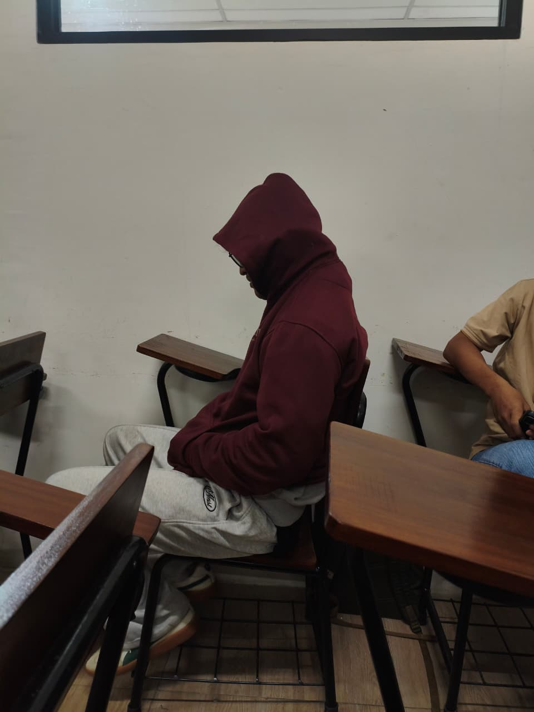

StokKu
Dengan StokKu, admin tempat penyimpanan dapat mencatat barang dan melihat daftar stok gadget seperti laptop, HP, dan TV.
Lihat proyek StokKuSaya mahasiswa Sistem Informasi di Universitas Pamulang.

Sekarang saya kuliah di semester 5. Di mata kuliah Pemrograman Web 1, saya belajar membuat halaman web dengan HTML, CSS, dan JavaScript. Portofolio ini saya buat sebagai tugas mata kuliah tersebut.
Saya juga belajar membuat aplikasi mobile. Saya menggunakan Flutter dan Dart untuk membuat StokKu, aplikasi yang membantu admin tempat penyimpanan mencatat stok gadget.
Saya cukup mengerti tiga bahasa pemrograman dan bisa bekerja sama dalam tim.
Dengan StokKu, admin tempat penyimpanan dapat mencatat barang dan melihat daftar stok gadget seperti laptop, HP, dan TV.
Lihat proyek StokKuIngin bertanya tentang StokKu atau tugas kuliah saya? Hubungi saya.